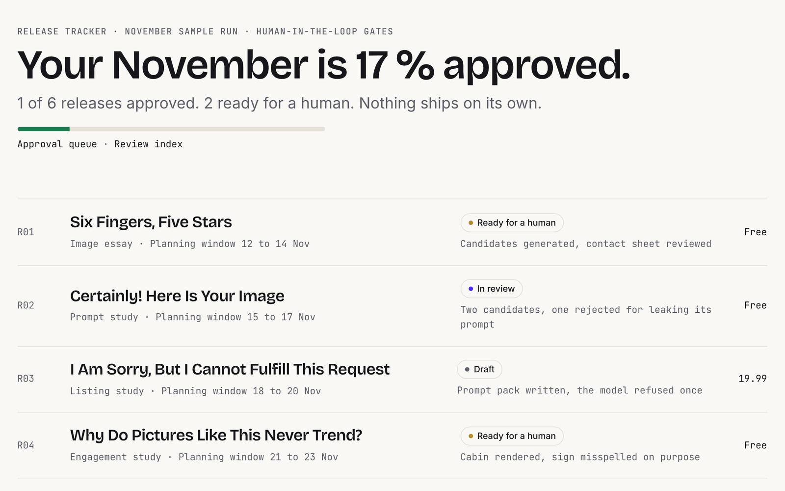
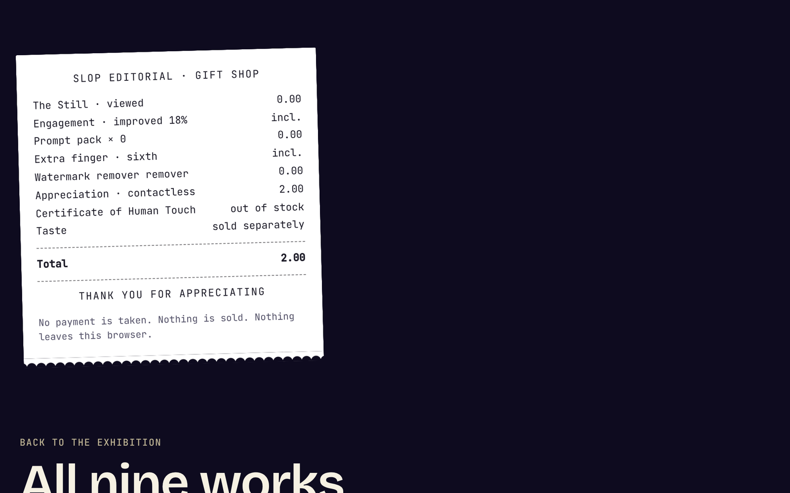
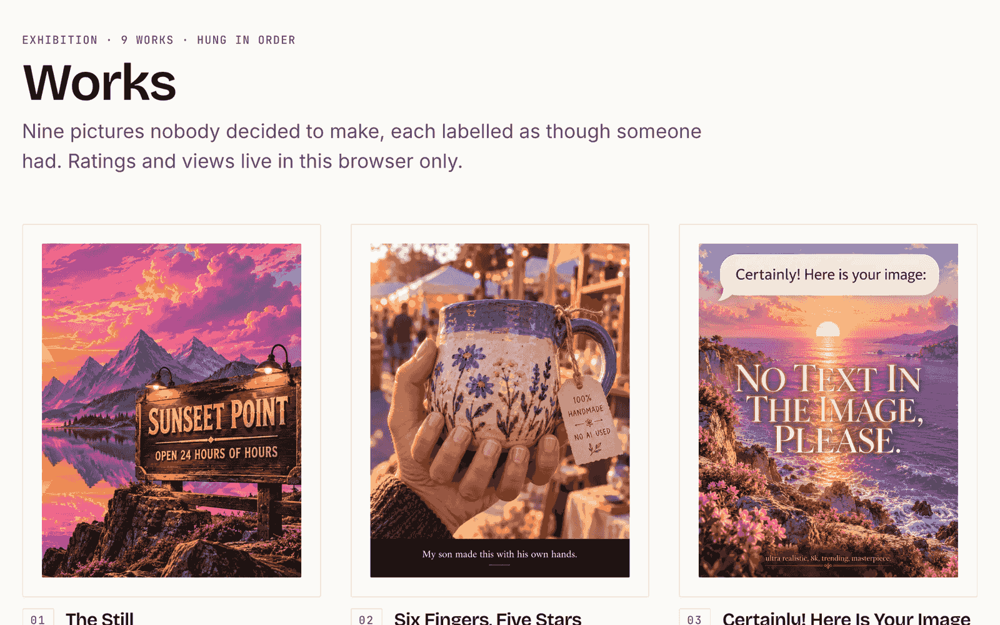

Case study
Slop Editorial
A satire of AI content sites, with fake metrics and fake upsells. Behind it is a real image pipeline that will not spend money without approval.
Proves A paid pipeline that asks before it spends
Problem
Image models made pictures nearly free. Feeds fill with work nobody decided to make. Hands get six fingers, signs say Sunseet, and every comment says Amazing.
The hard part is not generating images. It is deciding which ones deserve to exist, and keeping a paid pipeline from spending money nobody approved.
I wanted to make that point with a publication that is funny on the surface and strict underneath. The thesis fits in one line: generation is cheap, taste is not.
Approach
The project has two halves. The site is an Astro build that hangs 9 generated works like a gallery and labels them like the platforms it mocks: a cookie sheet with two Accept buttons, ratings that always read 4.2, a taste update that installs with no visible difference, a gift shop in front of a Three.js certificate.
The pipeline is a Python tool called slopgen. It plans jobs from Markdown prompts and a YAML plan, prints a cost estimate, refuses paid runs without an approval, and logs every request. It runs offline by default against a free mock provider.
The same rule runs through both halves. Automation proposes, a named person decides, and the decision is written down. The site's approval queue makes the joke out loud: its Approve button refuses, because approval happens with a human, not a button.
Architecture
Decisions
- Chose content-addressed fingerprints over job namesbecause a hash of provider, model, final prompt, seed, size and reference-image bytes means an unchanged job is never paid for twice.
- Chose three required flags over a confirm promptbecause a paid run needs
--yes, an--approval-refand an estimate under--max-usd. The ledger keeps the reference, so anyone can later answer who allowed the spend. - Chose never retrying a POST over retrying on timeoutbecause a retry can pay twice. The request id is saved the moment it exists, and an unclear outcome stays
uncertainuntil a person confirms. - Chose build gates over a style guidebecause a guide gets ignored. The build fails on external requests, em dashes, contractions, long sentences, broken links, leaks and blown budgets.
- Chose three 3D tiers over one rendererbecause phones and data saver should not load a WebGL scene. WebGPU falls back to WebGL, then to an 18-frame poster.
Results
- 70 unit tests49 Python tests for the pipeline and 21 Node tests for the gate logic, helpers and service worker, all passing. One pipeline test asserts that no key or personal path reaches a run directory.
- 146 build gates
npm run checkover the built site: brand, voice, links, leaks and budgets. - 143 browser checks
npm run verifydrives headless Chrome through Playwright, with axe in light and dark: 20 runs over 10 page types, 0 violations. - 81 KBShared JavaScript, gzipped. The 379 KB 3D chunk loads only on the certificate page.
A snapshot from one laptop with headless Chrome. The fal and Replicate adapters are tested against scripted fakes only, not the live services.
Screens



What I'd do next
- Run one small, approved job against a live provider, so the adapters are tested beyond fakes.
- Bring mobile performance on the 3D page above 95, starting with the lazy chunk.
- Run the WebGPU tier on real hardware. Today only WebGL, the poster tier and the fallbacks are verified.